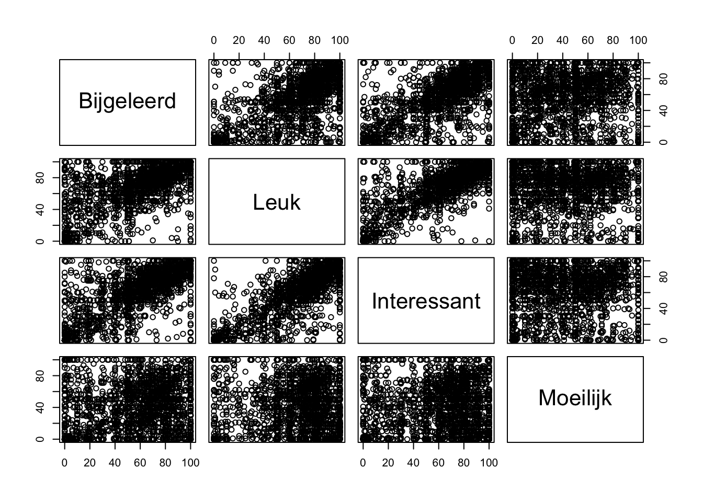

Alert - deze website is nog in ontwikkeling - feedback altijd welkom via sven.demaeyer@uantwperen.be
Contactmoment 3: Respons computer lab
Belangrijk
Vooraleer je de oefeningen kan oplossen is het belangrijk om zowel de dataset te laden, het pakket car te activeren en ook de OLP2 Functies te activeren.
Oefening 1
Oefening 1
Een deel van de leerlingen volgden een project gericht op het domein techniek. We vragen ons af of de percepties van leerlingen m.b.t. het project (Projectbijgeleerd, Projectleuk, Projectinteressant, Projectmoeilijk) onderling samenhangen?
Beantwoord de vraag a.d.h.v. de gepaste analyses.
Visualiseer de resultaten.
Om de vraag te beantwoorden berekenen we de onderlinge correlaties tussen deze variabelen en testen we de statistische significantie van deze correlaties. In de onderstaande code doen we dit in één beweging voor alle variabelen tegelijkertijd. Eerst maken we een object aan (Project) met daarin enkel de variabelen waartussen we een correlatie willen berekenen. Je ziet ook een optionele tussenstap waarin we de kolomnamen (variabelenamen) van de variabelen in Project aanpassen om kortere namen te hebben. Zo is de correlatietabel die we zullen verktrijgen meer leesbaar. Vervolgens berekenen we de correlaties door middel van de cor.prob() functie.
# Object aanmaken met enkel de variabelenProject <-data.frame(Techniek$Projectbijgeleerd, Techniek$Projectleuk, Techniek$Projectinteressant, Techniek$Projectmoeilijk)# Optioneel: kolomnamen aanpassen zodat ze korter zijncolnames(Project) <-c("Bijgeleerd", "Leuk", "Interessant", "Moeilijk")# Correlaties berekenencor.prob(Project)
De correlaties zijn allen tussen tussen 0.38 en 0.90: de samenhang varieert van middelmatig tot groot.
Bovendien zijn alle p-waarden kleiner dan 0.05 (zie getallen boven de diagonaal): de kans dat we de correlaties in onze steekproef zouden vaststellen indien H0 opgaat is kleiner dan 5%. We verwachten in de populatie WEL een samenhang tussen de verschillende percepties over het project.
Indien we op basis van deze analyse een conclusie zouden moeten rapporteren, dan zou die zo klinken.
Conclusie:
Alle percepties ten aanzien van het project hebben een verband met elkaar dat we niet enkel in deze steekproef vaststellen, maar ook kunnen doortrekken naar de populatie (p < 0.05). Al deze verbanden zijn positief en de perceptie van bijleren en leuk vinden (r = 0.81), bijleren en interessant vinden (r = 0.84) en leuk en interessant vinden (r = 0.90) hangen bovendien sterk met elkaar samen. Ook als leerlingen het project moeilijk vinden, geven ze aan dat ze iets bijleren (r = 0.43) en het zelfs interessant (r = 0.38) en leuk vinden (r = 0.38). Bij deze drie laatste verbanden gaat het telkens om een middelmatig samenhang.
De visualisatie kunnen we als volgt maken
plot(Project)

Oefening 2
Oefening 2
We vermoeden dat de lesstijl van een leerkracht een rol zou kunnen spelen in de ontwikkeling van de technische geletterdheid (TAC.na). We hebben evidentie om aan te nemen dat het belangrijk is dat:
leerlingen zelf experimenteren (PISA_Experimenteren)
leerlingen zelf onderwerpen kiezen (PISA_EigenInbreng)
de leerkracht de leerstof in een ruimer perspectief zet (PISA_Orientatie)
dit best kan d.m.v. interactie met de leerlingen (PISA_Interactie).
Formuleer voor deze 4 hypotheses een afzonderlijk besluit o.b.v. de resultaten van je analyses.
Bovenstaande oefening vraagt om 4 afzonderlijke analyses. Telkens gaat het om een bivariate regressie-analyse aangezien we het causaal verband willen nagaan tussen een aspect van lesstijl en technische geletterdheid.
Experimenteren
Model.Exp <-lm(TAC.na ~ PISA_Experimenteren, data = Techniek)summary(Model.Exp)
Call:
lm(formula = TAC.na ~ PISA_Experimenteren, data = Techniek)
Residuals:
Min 1Q Median 3Q Max
-0.59061 -0.16357 -0.00047 0.18127 0.41600
Coefficients:
Estimate Std. Error t value Pr(>|t|)
(Intercept) 0.598537 0.019153 31.250 <2e-16 ***
PISA_Experimenteren -0.005287 0.008171 -0.647 0.518
---
Signif. codes: 0 '***' 0.001 '**' 0.01 '*' 0.05 '.' 0.1 ' ' 1
Residual standard error: 0.2087 on 1677 degrees of freedom
(688 observations deleted due to missingness)
Multiple R-squared: 0.0002496, Adjusted R-squared: -0.0003466
F-statistic: 0.4186 on 1 and 1677 DF, p-value: 0.5177
Adjusted R-kwadraat = -0.0003: het gaat om een verwaarloosbaar effect (negatief % verklaarde variantie in TAC.na!!)
De p-waarde voor de test op modelniveau is 0.52: kans op de tendensen in onze steekproef indien H0 opgaat in de populatie is groter dan 5%. Dus, er is niet voldoende evidentie om te stellen dat dit model in de populatie variantie verklaart in TAC.na.
Het intercept bedraagt 0.60. Dit betekent dat een leerling die 0 scoort op de variabele PISA_Experimenteren 0.60 punten zal scoren op TAC.na. De p-waarde voor het intercept is lager dan 0.05: kans dat we deze waarde voor het intercept in onze steekproef vaststellen indien de H0 opgaat in de populatie is kleiner dan 5%. De nulhypothese is dat de waarde van het intercept gelijk is aan nul. Die nulhypothese kunnen we bijgevolg verwerpen.
\(\beta_{experimenteren}\) = -0.005. Dus 1 punt hoger scoren op PISA_Experimenteren leidt tot 0.005 punten lager scoren op TAC.na. Met p = 0.52: we kunnen de nulhypothese (H0 = deze regressiecoëfficiënt is in de populatie gelijk aan nul) niet verwerpen. Maw, we verwachten in de populatie geen invloed van experimenteren op technische geletterdheid.
Eigen Inbreng
Model.EI <-lm(TAC.na ~ PISA_EigenInbreng, data = Techniek)summary(Model.EI)
Call:
lm(formula = TAC.na ~ PISA_EigenInbreng, data = Techniek)
Residuals:
Min 1Q Median 3Q Max
-0.62709 -0.14642 0.00749 0.16134 0.46876
Coefficients:
Estimate Std. Error t value Pr(>|t|)
(Intercept) 0.684679 0.012193 56.152 <2e-16 ***
PISA_EigenInbreng -0.057591 0.006535 -8.813 <2e-16 ***
---
Signif. codes: 0 '***' 0.001 '**' 0.01 '*' 0.05 '.' 0.1 ' ' 1
Residual standard error: 0.204 on 1677 degrees of freedom
(688 observations deleted due to missingness)
Multiple R-squared: 0.04426, Adjusted R-squared: 0.04369
F-statistic: 77.66 on 1 and 1677 DF, p-value: < 2.2e-16
R-kwadraat = 0.04: het gaat om een klein effect (4% verklaarde variantie in Tac.na). Met p < 0.05: H0 kan verworpen worden. Dus we verwachten dat dit model in de populatie WEL variantie verklaart in TAC.na.
Het intercept bedraagt 0.68: een leerling die 0 scoort op PISA_EigenInbreng scoort 0.68 op `TAC.na. De p-waarde voor het intercept is lager dan 0.05: H0 wordt verworpen. Dus we verwachten dat in de populatie het intercept niet nul bedraagt.
\(\beta_{EigenInbreng}\) = -0.06, dus 1 punt hoger scoren op PISA_EigenInbreng leidt tot 0.06 punten lager scoren op TAC.na. Met p < 0.05: H0 wordt verworpen, dus we verwachten dat PISA_EigenInbreng in de populatie WEL invloed heeft op TAC.na.
Oriënteren
Model.Or <-lm(TAC.na ~ PISA_Orientatie, data = Techniek)summary(Model.Or)
Call:
lm(formula = TAC.na ~ PISA_Orientatie, data = Techniek)
Residuals:
Min 1Q Median 3Q Max
-0.61621 -0.16243 0.00984 0.17759 0.42678
Coefficients:
Estimate Std. Error t value Pr(>|t|)
(Intercept) 0.542515 0.017312 31.338 < 2e-16 ***
PISA_Orientatie 0.018424 0.006918 2.663 0.00781 **
---
Signif. codes: 0 '***' 0.001 '**' 0.01 '*' 0.05 '.' 0.1 ' ' 1
Residual standard error: 0.2082 on 1677 degrees of freedom
(688 observations deleted due to missingness)
Multiple R-squared: 0.004212, Adjusted R-squared: 0.003618
F-statistic: 7.093 on 1 and 1677 DF, p-value: 0.007812
Adjusted R-kwadraat = 0.003: het gaat om een verwaarloosbaar effect (0.3% verklaarde variantie in Tac.na). Met p < 0.05: H0 wordt verworpen, dus we verwachten dat dit model in de populatie WEL variantie verklaart in TAC.na.
Het intercept bedraagt 0.54: een leerling die 0 scoort op PISA_Orientatie scoort 0.54 op TAC.na in de steekproef. Met p < 0.05: H0 wordt verworpen dus we verwachten dit in de populatie het intercept niet gelijk is aan nul.
\(\beta_{Orientatie}\) = 0.02. Dit betekent dat in de steekproef 1 punt hoger scoren op PISA_Orientatie leidt tot 0.02 punten hoger scoren op TAC.na. Met p < 0.05: H0 wordt verworpen dus we verwachten dat in de populatie deze regressiecoëfficiënt niet gelijk is aan nul.
Call:
lm(formula = TAC.na ~ PISA_Interactie, data = Techniek)
Residuals:
Min 1Q Median 3Q Max
-0.58999 -0.16337 -0.00362 0.18043 0.41709
Coefficients:
Estimate Std. Error t value Pr(>|t|)
(Intercept) 0.575826 0.017589 32.738 <2e-16 ***
PISA_Interactie 0.004720 0.007382 0.639 0.523
---
Signif. codes: 0 '***' 0.001 '**' 0.01 '*' 0.05 '.' 0.1 ' ' 1
Residual standard error: 0.2087 on 1677 degrees of freedom
(688 observations deleted due to missingness)
Multiple R-squared: 0.0002437, Adjusted R-squared: -0.0003524
F-statistic: 0.4088 on 1 and 1677 DF, p-value: 0.5227
Adjusted R-kwaadraat = -0.0003: het gaat om een verwaarloosbaar effect (negatief % verklaarde variantie in Tac.na!!). Met p = 0.52: we kunnen H0 niet verwerpen dus we verwachten dat dit model in de populatie GEEN variantie verklaart in TAC.na.
Het intercept = 0.58: een leerling die 0 scoort op PISA_Interactie scoort 0.58 op TAC.na. Met p < 0.05: H0 kan verworpen worden dus we verwachten dat het intercept in de populatie niet gelijk is aan 0.
\(\beta_{Interactie}\) = 0.005. Dus 1 punt hoger scoren op PISA_Interactie leidt tot 0.005 punten hoger scoren op TAC.na. Met p = 0.52: H0 kan niet verworpen worden dus we verwachten dat PISA_Orientatie in de populatie GEEN invloed heeft op TAC.na.
Conclusie
Wat betreft het effect van “experimenteren” en “interactie” kunnen we erg kort zijn. Het intercept is telkens significant (p < 0.05), maar de hellingsgraad is niet statistisch significant (p = 0.52). Ook het model zelf is niet statistisch significant (p = 0.52). M.a.w. of leerlingen al dan niet mogen experimenteren in de lessen techniek of in interactie gaan met elkaar, heeft geen invloed op de technische geletterdheid van leerlingen (TAC.na). Als leerlingen zelf een inbreng mogen hebben in de lessen techniek stellen we wel vast dat dit een klein significant effect heeft (R² = 0.04; p < 0.05). Het effect is hier negatief (\(\beta\) = -0.06)! Voor elk punt dat een leerling meer scoort op de de schaal ‘PISA_EigenInbreng’ zal de technische geletterdheid met 0.06 punten afnemen. Als we kijken naar de omkadering (‘PISA_Orientatie’) die de leerkracht geeft bij de leerstof dan stellen we vast dat we hier wel een significant effect vinden (p < 0.05). Leerlingen die 1 punt meer scoren op ‘PISA_Orientatie’ zullen 0.02 punten meer scoren op technische geletterdheid (‘TAC.na’). Dit model is statistisch significant (p < 0.05) en we kunnen dus aannemen dat we dergelijke trends ook in de populatie zullen aantreffen. Maar het effect is echter wel verwaarloosbaar klein! Met andere woorden, ook hier stellen we vast dat de invloed van lesstijl op de ontwikkeling van de technische geletterdheid van de leerling van weinig praktische waarde is.